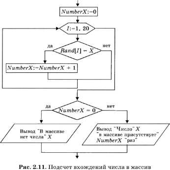
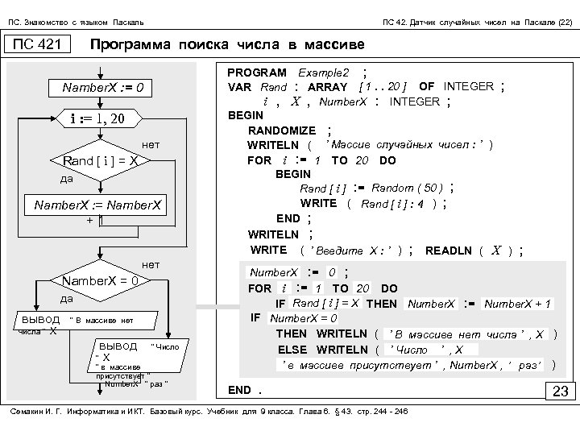

Основные темы параграфа
Датчик случайных чисел на Паскале
Алгоритм поиска числа в массиве
Программа поиска чаисла в массива
Вопросы и задания
Что такое случайные числа
Сначала несколько слов о случайных числах. Все себе представляют игральный кубик, имеющий шесть граней. При каждом бросании кубика выпадение какого-то числа есть случайное событие. С равной вероятностью может выпасть любое число от 1 до 6. Результат бросания кубика — это случайное число. А теперь представьте себе кубик с 10 гранями. Правда, кубиком его можно назвать только условно. Это десятигранник, на гранях которого нанесены числа от 1 до 10. Результат бросания такого «кубика» — случайное число в диапазоне от 1 до 10. Еще один пример. При розыгрыше лотереи из вращающегося барабана достают пронумерованные шары. Выпавший номер шара — случайное число.
В языках программирования, как правило, имеется аналог подобного «кубика» или лототрона, позволяющий получать случайные числа. Он называется датчиком случайных чисел. Это стандартная функция. В Паскале она записывается так: random (X) . Здесь X — целое число. При выполнении функции ее результатом становится целое число в диапазоне от 0 до X. Например, если X = 50, то в результате можем получить любое целое число от 0 до 50.
Приведем программу, которая демонстрирует работу датчика случайных чисел на Паскале:
Program Example;
var I: integer;
begin
for I:=1 to 10 do write(random(50):4)
end.
По этой программе на экран выводится десять случайных чисел из диапазона от 0 до 50. Вот результат тестового выполнения этой программы:
0 3 17 20 27 7 31 16 37 42
А теперь вернемся к условию задачи. Получающиеся с помощью датчика случайные числа «раскладываются» по элементам массива. Назовем массив Rand, а число элементов в нем пусть будет равно 20. Число, которое нужно искать в массиве, будет вводиться в переменную X.
Алгоритм поиска числа в массиве
Приведена блок-схема алгоритма поиска в массиве Rand величины X с подсчетом числа ее вхождений в массив в переменной NumberX.
Обратите внимание на блок, отображающий цикл с параметром. Он имеет форму вытянутого шестиугольника. В блоке записывается параметр цикла (переменная I), начальное и конечное значения параметра через запятую (:=1, 20).
Переменная NumberX играет роль счетчика. Вначале ей присваивается ноль. Затем в цикле происходит перебор всех элементов массива, и при каждом выполнении условия равенства к счетчику добавляется единица. Так всегда организуются счетчики в программах! В результате выполнения программы на экран будет выведен один из двух вариантов ответа: либо сообщение, что в массиве нет данного числа, либо сообщение о том, сколько раз это число присутствует в массиве, если оно там обнаружено.

Программа поиска чаисла в массива
Напишем программу на Паскале, содержащую как заполнение массива случайными числами, так и алгоритм, описанный в блок - схеме на рис. 2.11.
В этой программе присутствует еще один новый для нас оператор: Randomize. Это стандартная процедура Паскаля, которая производит установку начального состояния датчика случайных чисел. Дело в том, что без этого оператора функция random при многократном повторении выполнения программы всегда будет выдавать одну и ту же последовательность чисел. Процедура Randomize случайным образом устанавливает начальное состояние датчика. Поэтому при каждом выполнении программы будут получаться разные наборы случайных чисел.

Коротко о главном
Случайные числа-результаты случайного выбора из конечного множества значений(игровой кубик,жребий,лотерея)
Функция random(X)-датчик случайных чисел в диапазоне от 0 до X на Паскале
Для подсчета количесва величин используется переменная-счетчик